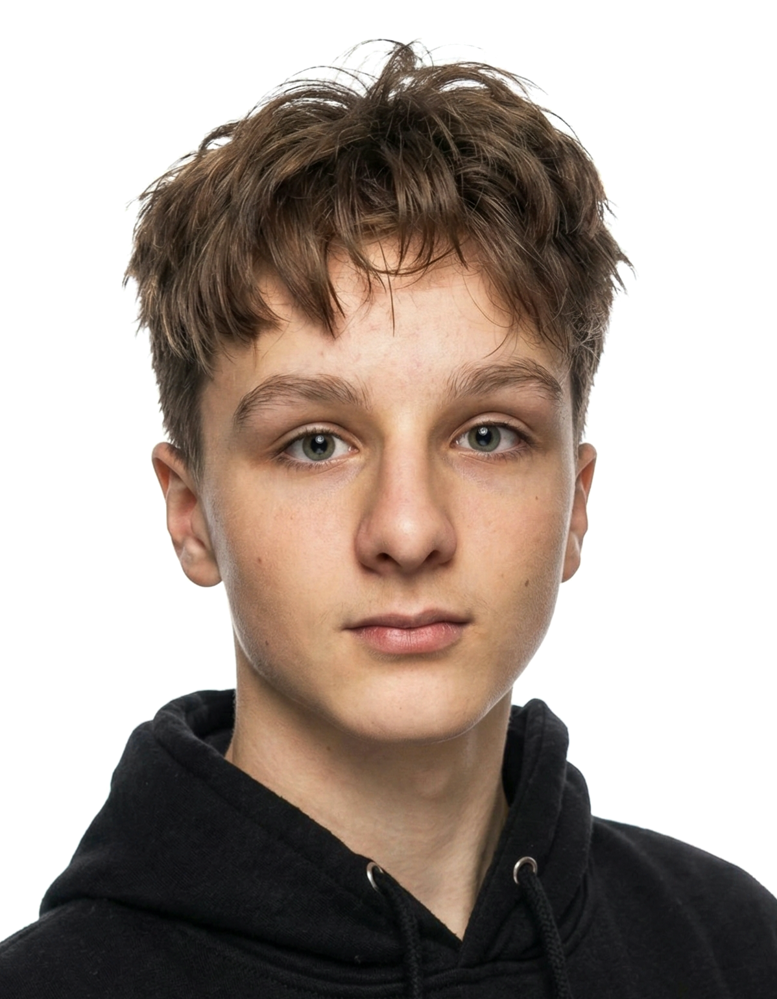

Tobiáš Firla
Software mangager.
Zajišťuje vše kolem softwaru, aplikace a algoritmů.
Také se podílí na vývoji hardweru a webu.
FUNFACT: know-how jako senior Java Script developer.

Vojtěch Kalabza
Marketing a desing.
Řídí mraketing a stará se o nejlepší
možný vzhled produktu.
Stojí za všemi marketingovými
materíaly a videi.
FUNFACT: bez AI by nedal ani ránu.

Viktor Gajda
Hardwere manager.
Stará se o nejlepší funkčnost produktu
a hledá nejlepší komponenty.
Vyvíjí web a podílí se na vývoji softwaru.
FUNFACT: díky torettovu syndromu
si vysloužil přezdívku "The special one"
Matouš Byrtus
Vnějśi materiál a biomechanika.
Zajišťuje nejlepší materiál pro vložku a její ergonomii.
Biomechanik, který se stará o to, aby vložka
maximálně ergonomická a pohodlná.
FUNFACT: Mistr phytonu,
programování uzáků pro strejdy
jsou jeho specality